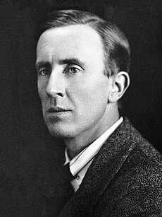

ჯონ რონალდ რუელ ტოლკინი (ინგლ. John Ronald Reuel Tolkien[48]; დ. 3 იანვარი, 1892 — გ. 2 სექტემბერი, 1973) — ინგლისელი ფილოლოგი, მწერალი და პროფესორი, წიგნების „ჰობიტი“ და „ბეჭდების მბრძანებელი“ ავტორი. ბრიტანეთის იმპერიის ორდენის კავალერი. იგი იყო ანგლო-საქსონური ენის (1925-1945 წლებში) მკვლევარი და პროფესორი ოქსფორდის უნივერსიტეტში და ინგლისური ენისა და ლიტერატურის პროფესორი (1945-1959). ტოლკინი იყო კლაივ ლუისის მეგობარი — ორივე იყო ლიტერატორთა მცირე ჯგუფ „ინკლინგების“ წევრი. „ჰობიტისა“ და „ბეჭდების მბრძანებლის“ გარდა, მან დაწერა მითოლოგიური ჟანრის „სილმარილიონი“ და სხვა წიგნები, რომელთა ნაწილი მისი გარდაცვალების შემდეგ გამოქვეყნდა. ყველაფერი ერთად მეტწილად დაფუძნებულია გამოგონილ და რეალურ ამბებზე, გამოგონილ ენებზე და ლიტერატურულ ესეებზე, რომლებიც მოგვითხრობენ არდის სამყაროზე და შუახმელეთზე. ტოლკინის გარდაცვალების შემდეგ, ამ წიგნების გამოცემაზე მუშაობდა მისი შვილი კრისტოფერ ტოლკინი. ტოლკინის ნაწარმოებმა გავლენა იქონიეს მსოფლიო ლიტერატურაზე, უპირველეს ყოვლისა, ე. წ. „ფენტეზის“ ჟანრზე, ასევე ხელოვნების სხვა დარგებზე.
